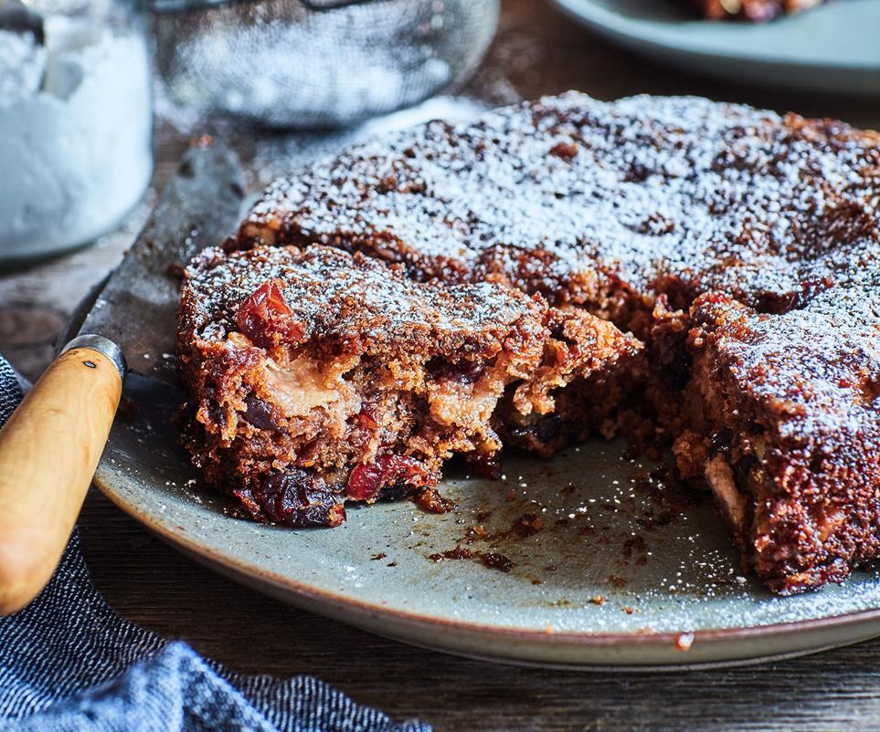

Feijoa Walnut Cake
This feijoa walnut cake from Nici Wickes is delicious way to celebrate feijoa season.

INGREDIENTS
- 300 gram feijoa flesh (about 8-10 medium feijoas), roughly chopped
- 1 cup walnut pieces
- 1 cup dried cranberries (or use sultanas)
- 3/4 cup caster sugar
- 1 egg
- 100 gram melted butter
- 2 teaspoon mixed spice
- 2 teaspoon baking soda
METHOD
- Preheat oven to 180°C. Grease and line a 20cm round springform tin.
- In a large bowl, mix the feijoas, walnuts, cranberries and sugar.
- With a beater, beat the egg and butter until well mixed. Add to the feijoa mixture.
- Sift the flour, mixed spice and baking soda into the feijoa mixture, stirring lightly.Scrape into the prepared tin.
- Bake for 40-45 minutes or until a skewer comes out clean.
- Run a knife around the edges of the tin and carefully remove the ring from the base. Serve warm as a dessert or leave to cool for 20 minutes before slicing.
Courtesy of the Food to Love, see the original recipe here.